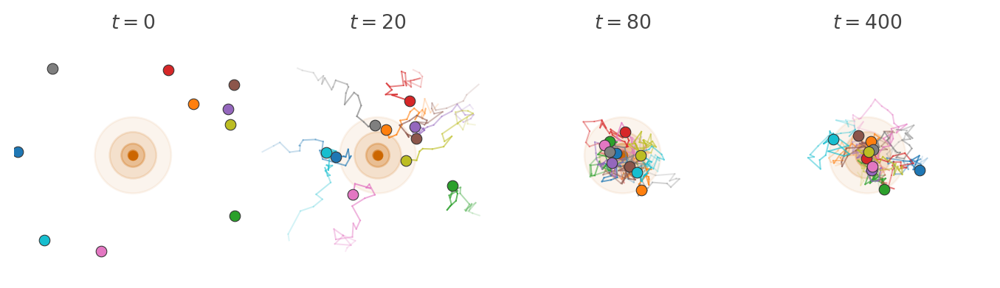
6 Mechanics of MCMC
\[ \def\then{\mathbin{;}} \def\kernel{\rightsquigarrow} \def\ivmark#1{[\![#1]\!]} \]
Markov chain Monte Carlo (MCMC) is a family of algorithms that lets us sample from distributions we cannot sample from directly. The trick is to design a Markov chain whose long-run behavior matches our target distribution, then run the chain and treat its trajectory as an approximate sample. To understand why this works, we need a picture of how Markov chains settle into stationary distributions, what it means for a single trajectory to be representative of that distribution, and how to engineer a chain so that its stationary distribution is the one we want.
6.1 Random dynamics and stationary distributions
Imagine a swarm of insects moving around a light source at night. Each insect moves around independently according a simple rule.
We model this with a transition kernel \(k : X \kernel X\) on a state space \(X\). For each current state \(x\), the kernel specifies the probability \(k(x' \mid x)\) of moving to state \(x'\) in one step. If the population at time \(t\) is described by a distribution \(p_t\), then the kernel acts on it by sequential composition to produce the distribution at the next time step: \[ p_{t+1} = p_t \then k. \]
We have already seen that this kind of model is called a Markov chain. In string diagrams, we can depict it as follows:
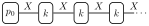
Run the dynamics long enough and something striking happens. Although every individual particle keeps moving, the shape of the cloud stops changing. The population settles into a fixed pattern: as many particles flow into each region as flow out. This fixed pattern is the stationary distribution.
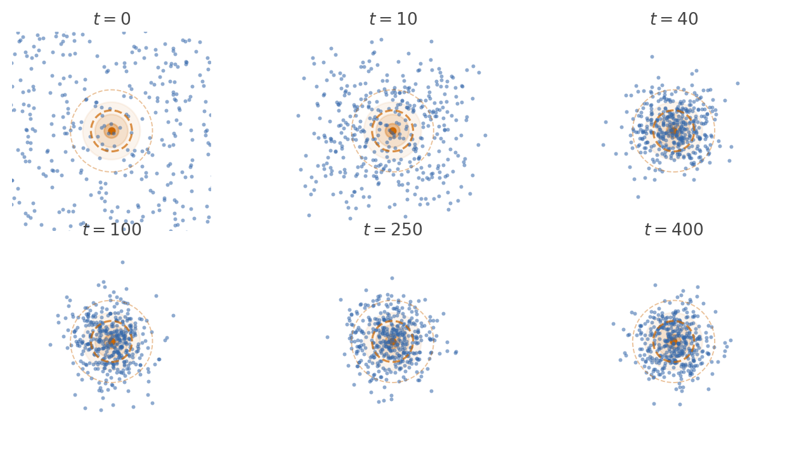
Definition 6.1 A distribution \(p_\infty\) on \(X\) is a stationary distribution for the kernel \(k : X \kernel X\) if it is a fixed point of the dynamics: \[ p_\infty = p_\infty \then k. \]
In string diagrams,
The stationary distribution describes the long-run spatial census of the population. If we froze time after the cloud had settled and counted how many particles sit in each region, the answer would be proportional to \(p_\infty\).
6.2 Ergodicity: time averages equal spatial averages
Keeping track of an entire population is hard work. Instead, we would like to follow a single particle and use its trajectory to learn about the stationary distribution. When can we do this?
Imagine the population in stationarity. The reason certain regions have more particles than others is that the dynamics keep sending more particles into them than out. Hence, if we follow a single particle, it will spend more time in high-density regions and less time in low-density regions. If we wait long enough, the fraction of time it spends in each region should match the fraction of particles in that region under \(p_\infty\). In other words, if we look at the trajectory of one particle, we should see it visiting different regions with frequencies proportional to their stationary mass.
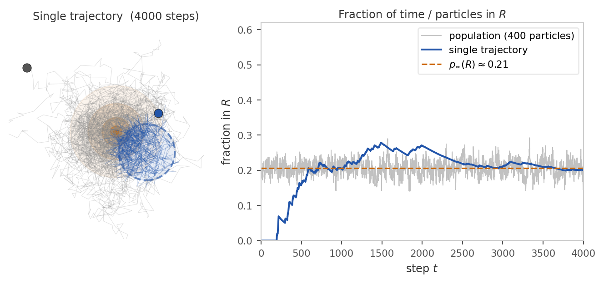
In order for this to work, the dynamics must allow every particle to explore the entire space well. This condition is called ergodicity. There are two main consequences of ergodicity: First, the long-run distribution of the chain converges to \(p_\infty\) regardless of where it started: \[ k^N(y \mid x) \xrightarrow{N \to \infty} p_\infty(y) \quad \text{for all } x, y \in X. \] As a consequence, the system will eventually forget its initial distribution and settle into the same stationary pattern.
Second, the time average along that one trajectory matches the spatial average over the whole population. This is often called the ergodic theorem: For any integrable function \(f : X \to \mathbb{R}\), \[ \underbrace{\frac{1}{N} \sum_{t=1}^N f(x_t)}_{\text{time average along one chain}} \;\;\xrightarrow{N \to \infty}\;\; \underbrace{\mathbb{E}_{x \sim p_\infty}[f(x)]}_{\text{spatial average over } p_\infty}. \] Hence, we can use the samples along the trajectory to estimate expectations under the stationary distribution. This works despite the fact that they are not independent samples from \(p_\infty\).
6.3 When does ergodicity hold?
Two structural failures can prevent ergodicity:
(a) Reachability and recurrence. The chain must be able to reach every region that carries stationary mass, and keep coming back to it. If the state space splits into disjoint pieces with no transitions between them, a particle started in one piece never visits the other, and a single trajectory cannot represent the full distribution. More subtly, even within a connected space the chain might wander off to infinity and never return to a region it once visited.
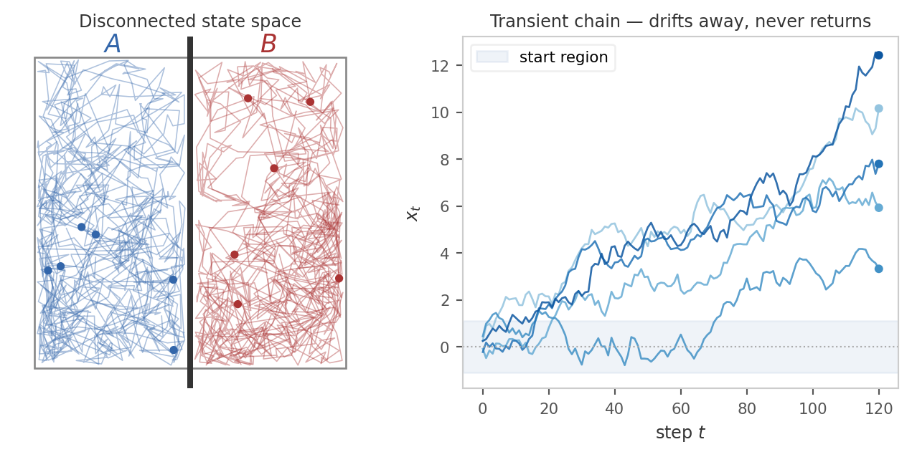
Formally, the correct reachability condition is Harris recurrence: For all “interesting” measurable sets \(A\), the chain must return to \(A\) infinitely often starting from any state. The qualifier “interesting” is needed to rule out sets of measure zero that the chain can never hit. Formally, such sets are quantified with respect to a reference measure \(\psi\).
Definition 6.2 A probability kernel \(k: X \kernel X\) is Harris recurrent if there exists a non-zero \(\sigma\)-finite measure \(\psi\) such that whenever \(\psi(A) > 0\), the chain returns to \(A\) infinitely often with probability \(1\), starting from any state \(x\).
Provided the kernel has a stationary distribution, Harris recurrence is sufficient for temporal averages to converge to spatial averages over \(p_\infty\). However, for the iterated kernel \(k^N\) to converge to \(p_\infty\) regardless of initial distribution, we need a further condition:
(b) No deterministic cycles. The chain must not get locked into a periodic schedule. If transitions force it to alternate strictly between disjoint sets \(A\) and \(B\) at every step, then at any given time only one of the two sets is occupied, and the distribution at time \(t\) depends on the parity of \(t\) rather than settling.
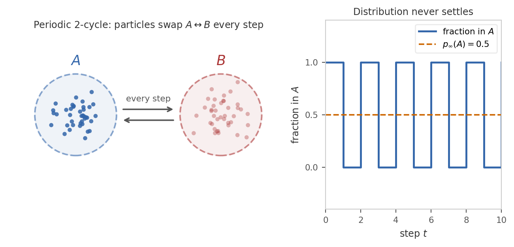
Formally, the condition that rules this out is aperiodicity: the chain must not be forced to cycle through a sequence of disjoint sets in a fixed order.
Definition 6.3 A probability kernel \(k: X \kernel X\) is aperiodic if there is no sequence of non-empty disjoint measurable sets \(A_1, A_2, \ldots, A_k\) with \(k \ge 2\) such that the chain must cycle through them in order. In other words, we must not have \(k(A_{i+1} \mid x) = 1\) for all \(x \in A_i\) and \(i = 1, \ldots, k\) (treating \(A_{k+1} = A_1\)).
6.4 Metropolis-Hastings
The idea behind Markov chain Monte Carlo is to design a kernel \(k\) that has a desired target distribution \(p_\infty\) as its stationary distribution. If the kernel is Harris recurrent and aperiodic, it will converge to \(p_\infty\) and we can use a single trajectory to estimate expectations under \(p_\infty\).
6.4.1 Detailed balance
Solving the global fixed-point equation \(p_\infty = p_\infty \then k\) for \(k\) is difficult. The Metropolis-Hastings algorithm instead enforces a stronger but simpler local condition called detailed balance.
Definition 6.4 Suppose that \(k\) and \(p_\infty\) have densities with respect to a common measure. Then \(k\) satisfies detailed balance with respect to \(p_\infty\) if, for all \(x, x' \in X\), \[ p_\infty(x) \, k(x' \mid x) = p_\infty(x') \, k(x \mid x'), \]
where the equation is between density functions.
Intuitively, we think of \(p_\infty(x)\) as the probability mass at state \(x\) and \(k(x' \mid x)\) as the flow of probability mass from \(x\) to \(x'\). Hence, the total flow from \(x\) to \(x'\) is \(p_\infty(x) \, k(x' \mid x)\). Thus detailed balance says that the flow from \(x\) to \(x'\) equals the flow from \(x'\) to \(x\) for every pair of states. This is a much stronger condition than stationarity, which only requires that the total flow into each state equals the total flow out.
Proposition 6.5 If \(k\) satisfies detailed balance with respect to \(p_\infty\), then \(p_\infty\) is stationary for \(k\).
Proof. \[ (p_\infty \then k)(x') = \int_{x \in X} p_\infty(x) \, k(x' \mid x) \, dx \stackrel{\text{DB}}{=} \int_{x \in X} p_\infty(x') \, k(x \mid x') \, dx = p_\infty(x') \int_{x \in X} k(x \mid x') \, dx = p_\infty(x'). \]
6.4.2 The MH kernel
We will now construct a kernel \(k\) that satisfies detailed balance with respect to a given target distribution \(p_\infty\). The construction starts with an arbitrary proposal proposal kernel \(q(x' \mid x)\) that is easy to sample from an corrects it to satisfy detailed balance. We assume that \(q\) has a density with respect to the same measure as \(p_\infty\).
In general, the proposal \(q\) does not satisfy detailed balance with respect to \(p_\infty\) since both flows are generally unequal: \[ p_\infty(x) \, q(x' \mid x) \quad \text{and} \quad p_\infty(x') \, q(x \mid x') \]
To balance the flows, we throttle the flow in one direction. For this, we introduce an acceptance probability \(\alpha(x' \mid x)\). After sampling a proposed move \(x \to x'\) from \(q\), we accept it (and move) with probability \(\alpha(x' \mid x)\), and otherwise reject it (and stay at \(x\)). Hence, the modified kernel \(k\) transitions from \(x\) to \(x'\) according to \(q(x' \mid x) \, \alpha(x' \mid x)\) and stays at \(x\) with the remaining probability. Formally, \[ k(x' \mid x) = q(x' \mid x)\,\alpha(x' \mid x) + \delta_x(x')\int \bigl[1 - \alpha(y \mid x)\bigr]\,q(dy \mid x), \] where \(\delta_x\) is the Dirac delta at \(x\). The first term accounts for accepted moves, and the second term accounts for rejected moves.
To enforce detailed balance, we must choose \(\alpha\) such that the flow in both directions is equal. \[ p_\infty(x) \, q(x' \mid x) \, \alpha(x' \mid x) = p_\infty(x') \, q(x \mid x') \, \alpha(x \mid x'). \]
There are two degrees of freedom in this equation. Choosing \(\alpha(x \mid x') = 1\) for the reverse direction (always accept), we get \[ p_\infty(x) \, q(x' \mid x) \, \alpha(x' \mid x) = p_\infty(x') \, q(x \mid x') \cdot 1. \]
Solving for \(\alpha(x' \mid x)\) yields the classical Metropolis-Hastings formula:
Definition 6.6 The Metropolis-Hastings acceptance probability is \[ \alpha(x' \mid x) = \min\left(1, \, \frac{p_\infty(x') \, q(x \mid x')}{p_\infty(x) \, q(x' \mid x)}\right). \]
Proposition 6.7 The kernel \(k\) obtained by combining the proposal \(q\) with the Metropolis-Hastings acceptance probability \(\alpha\) satisfies detailed balance with respect to \(p_\infty\).
Proof. For \(x \neq x'\), assume without loss of generality that \(p_\infty(x') q(x \mid x') \le p_\infty(x) q(x' \mid x)\). Then \(\alpha(x \mid x') = 1\) and \[\alpha(x' \mid x) = \frac{p_\infty(x') q(x \mid x')}{p_\infty(x) q(x' \mid x)}.\]
Hence \[ p_\infty(x) \, k(x' \mid x) = p_\infty(x) \, q(x' \mid x) \, \alpha(x' \mid x) = p_\infty(x') \, q(x \mid x') = p_\infty(x') \, k(x \mid x'). \]
The case \(x = x'\) is trivial since the flow from \(x\) to itself is just the probability of rejecting a move, which is automatically balanced.
6.4.3 The MH algorithm
Putting the above pieces together, the Metropolis-Hastings algorithm is as follows:
NoteMetropolis-Hastings algorithm
Start at an arbitrary state \(x_0\). For \(t = 1, \ldots, n\):
- Sample a proposed move \(x' \sim q(- \mid x_{t-1})\).
- Compute the acceptance probability \(\alpha(x' \mid x_{t-1}) := \min\left(1, \, \frac{p_\infty(x') \, q(x_{t-1} \mid x')}{p_\infty(x_{t-1}) \, q(x' \mid x_{t-1})}\right)\).
- With probability \(\alpha(x' \mid x_{t-1})\), accept the move and set \(x_t := x'\). Otherwise, reject the move and set \(x_t := x_{t-1}\).
Samples from the trajectory \(x_{0:n}\) are not independent, but can be used to estimate expectations under \(p_\infty\) by the ergodic theorem: \(\frac{1}{n} \sum_{t=0}^{n} f(x_t) \to \mathbb{E}_{p_\infty(x)}[f(x)]\) as \(n \to \infty\).
6.4.4 Using MH in Bayesian inference
An important feature of the formula is that \(p_\infty\) enters only through the ratio \(p_\infty(x') / p_\infty(x)\). Hence the algorithm only needs to evaluate \(p_\infty\) up to an unknown normalizing constant. In the Bayesian setting, the target distribution is the posterior \[p_\infty(\theta) = p(\theta \mid y) = \frac{p(y ,\theta)}{p(y)}.\]
Since the normalizing constant \(p(y)\) cancels in the ratio \(p_\infty(\theta') / p_\infty(\theta)\), we can compute the acceptance probability using only the joint distribution \(p(y ,\theta)\) over the parameters and data.
In a generative model composed of several kernels, the joint distribution accross all variables factorizes into a product of kernels by copy-composition. Hence, computing this quantity is straightforward: we just multiply the densities of all kernels in the model evaluated at the current state. In practice, we work with log-densities to avoid numerical underflow and to turn products into sums.
6.4.5 Optimality of the acceptance ratio
There are many ways to define \(\alpha\) that balance the flows, for example, by scaling both directions down by an arbitrary common factor. The Metropolis-Hastings choice is the one that maximizes the acceptance probability in each direction. The following heuristic argument explains why this is the right choice.
Whenever the chain rejects a proposal, the trajectory records a duplicate of the current state. Lower acceptance rates produce more duplicate samples, increasing the autocorrelation of the trajectory. Because the Monte Carlo estimator averages over the trajectory, correlated samples carry less independent information than uncorrelated ones, slowing the convergence in the ergodic theorem. By accepting as often as possible while preserving detailed balance, the Metropolis-Hastings ratio gives the lowest asymptotic variance among all detailed-balance corrections of \(q\).
6.4.6 Choosing the proposal
Although the Metropolis-Hastings ratio is optimal given a proposal, the practical efficiency of the algorithm depends heavily on choosing \(q\) well. There is a fundamental tradeoff:
- Tiny steps. If \(q\) proposes states very close to the current state, then \(p_\infty(x)\) and \(p_\infty(x')\) are similar and acceptance is nearly always granted. But the chain explores the space slowly: it takes many steps to traverse regions where \(p_\infty\) has support.
- Large steps. If \(q\) proposes states far from the current state, the chain can in principle traverse the space quickly. But most proposals land in low-probability regions and are rejected, again producing duplicate samples and high autocorrelation.
A good proposal balances these extremes: it takes the largest steps that still maintain a reasonably high acceptance rate.
6.4.7 Harris recurrence and aperiodicity of MH
We have constructed the MH kernel to satisfy detailed balance with respect to \(p_\infty\), so \(p_\infty\) is stationary. However, for MCMC to be theoretically justified, we also need to check that the kernel is Harris recurrent and aperiodic.
Aperiodicity is guaranteed as long as the proposal has some chance of being rejected. This is usually the case, with the notable exception of Gibbs samplers which always accept their proposals.
Harris recurrence is guaranteed for MH kernels as long as the chain can eventually reach every region \(A\) of the state space for which \(p_\infty(A) > 0\) from any starting point. For example, this is easily satsified if the proposal is positive everywhere.
Hence, Harris recurrence and aperiodicity are not usually a concern for MH samplers. The choice of proposal is a much more important practical concern.
6.4.8 Composing MH steps
So far we have treated the proposal \(q\) as a single distribution that updates all parameters at once. Nothing in the construction forces this. If \(K_1, K_2, \dots, K_m\) are each MH kernels that leave the same target \(p_\infty\) stationary, then any composition \(K_1 ; \cdots ; K_m\) also leaves \(p_\infty\) stationary. This gives us the freedom to break a single MH update into a sequence of smaller MH updates, each acting on a different block of parameters while holding the rest fixed.
Concretely, partition \(\theta = (\theta_1, \dots, \theta_m)\) into blocks. The \(i\)-th sub-step proposes a new value \(\theta_i'\) from a block proposal \(q_i(\theta_i' \mid \theta)\) and accepts it with the usual MH ratio, treating the other blocks as constants in the target: \[ \alpha_i \;=\; \min\!\left(1,\; \frac{p_\infty(\theta_1, \dots, \theta_i', \dots, \theta_m)}{p_\infty(\theta_1, \dots, \theta_i, \dots, \theta_m)} \cdot \frac{q_i(\theta_i \mid \theta_1, \dots, \theta_i', \dots)}{q_i(\theta_i' \mid \theta)}\right). \] Each sub-step satisfies detailed balance for \(p_\infty\) on its own, so their composition is a valid MH sampler.
The trade-off is the same one we saw between tiny and large steps, but along a different axis. A block update changes fewer coordinates at a time, so the proposed state is “closer” to the current one in joint log-density and is more likely to be accepted. The price is that traversing the full parameter space now takes \(m\) sub-steps instead of one, and each sub-step typically requires its own evaluation of \(p_\infty\). Block updates are especially useful when different parameters have very different scales or when the posterior is strongly correlated only within certain groups of parameters: a single joint proposal would have to compromise on a step size that works for all of them, while block proposals can be tuned per-block.
6.4.9 The Gibbs sampler
The Gibbs sampler is the limiting case of block-MH in which each block proposal is the exact conditional distribution \(q_i(\theta_i' \mid \theta) = p_\infty(\theta_i' \mid \theta_{-i})\), where \(\theta_{-i}\) denotes all components of \(\theta\) except \(\theta_i\). Plugging this into the block MH ratio, the joint density factors as \(p_\infty(\theta) = p_\infty(\theta_i \mid \theta_{-i}) \, p_\infty(\theta_{-i})\), the marginal \(p_\infty(\theta_{-i})\) cancels, and the conditional terms cancel against the proposal ratio. The result is \(\alpha_i = 1\): every Gibbs proposal is accepted by construction. A full sweep cycles through all blocks \(\theta_i\), drawing each one from its conditional given the current values of the others.
The appeal of Gibbs sampling is that there are no rejected steps, no autocorrelation from duplicated samples, and no proposal parameters to tune. The catch is that we need to be able to sample exactly from each conditional \(p_\infty(\theta_i \mid \theta_{-i})\). This is only tractable for specific model structures. Outside that regime the conditionals have no closed form and Gibbs is no longer applicable. Even when it does apply, Gibbs can mix poorly along directions of strong posterior correlation, because each sub-step is constrained to move along a single coordinate axis. Modern gradient-based samplers like HMC sidestep both limitations by exploiting the joint geometry directly, which is why this chapter focuses on them.
6.5 Coding MH samplers
In Chapter 5 we saw how to use NumPyro to run MCMC samplers. We will now implement a simple Metropolis-Hastings sampler from scratch in JAX. This will give us a deeper understanding of how the algorithm works and how to choose proposals.
To keep things simple, we focus on Bayesian linear regression: we observe pairs \((x_n, y_n)\) with \(x_n \in \mathbb{R}^d\) and \(y_n \in \mathbb{R}\) and model \[ y_n \mid x_n, \beta, \sigma \;\sim\; \mathcal{N}\!\bigl(x_n^\top \beta,\, \sigma^2\bigr), \] with regression coefficients \(\beta \in \mathbb{R}^d\) and noise scale \(\sigma > 0\). The unknowns form a \((d+1)\)-dimensional continuous parameter space.
We will fit the model to synthetic data generated from known \(\beta, \sigma\). This lets us check parameter recovery and isolate the effect of the proposal.
import jax
import jax.numpy as jnp
from jax import random
from jax.scipy import statsN, d = 100, 4
true_beta = jnp.array([1.0, -0.5, 2.0, 0.3])
true_sigma = 0.7
key_x, key_eps = random.split(random.PRNGKey(0))
X_cov = random.normal(key_x, (N, d - 1))
X = jnp.concatenate([jnp.ones((N, 1)), X_cov], axis=1) # design matrix with intercept
y = X @ true_beta + true_sigma * random.normal(key_eps, (N,))6.5.1 The generative model in JAX
MCMC works best in unconstrained coordinates. Hence, we work with \(\log \sigma \in \mathbb{R}\) rather than \(\sigma > 0\), so the chain never has to bounce off a boundary. Under this choice, the full model is \[ \begin{aligned} \beta_j &\sim \mathcal{N}(0,\, \tau_\beta^2), \quad j = 1, \ldots, d, \\ \log \sigma &\sim \mathcal{N}(0,\, \tau_{\log\sigma}^2), \\ y_n \mid x_n, \beta, \sigma &\sim \mathcal{N}\!\bigl(x_n^\top \beta,\, \sigma^2\bigr), \quad n = 1, \ldots, N. \end{aligned} \]
We choose weakly informative Gaussian priors, which discourage absurd values without committing to specific ones. We pack all parameters into a single flat vector theta of length \(d + 1,\) with the regression coefficients in the first \(d\) entries and \(\log \sigma\) in the last.
To run MCMC, we need to be able to compute the full joint distribution \[ p(\beta, \log\sigma, y \mid X) \;=\; \underbrace{p(\beta) \, p(\log \sigma)}_{\text{prior}} \cdot \underbrace{\prod_{n=1}^N \mathcal{N}\!\bigl(y_n \mid x_n^\top \beta,\, \sigma^2\bigr)}_{\text{likelihood}}. \]
For numerical stability, we will work with the log joint distribution, which turns products into sums. This means the log joint function can walk through the model from top to bottom and add up the log densities of all kernels evaluated at the current state.
@jax.jit
def log_joint(theta, X, y, tau_beta=5.0, tau_log_sigma=1.0):
"""Log p(beta, log_sigma, y | X) with theta = [beta_0, ..., beta_{d-1}, log_sigma]."""
# Unpack: first d entries are the regression coefficients, last is log sigma.
beta, log_sigma = theta[:-1], theta[-1]
sigma = jnp.exp(log_sigma)
# Sum log-densities of priors and likelihood (= log of their product).
log_prior_beta = jnp.sum(stats.norm.logpdf(beta, 0.0, tau_beta))
log_prior_log_sigma = stats.norm.logpdf(log_sigma, 0.0, tau_log_sigma)
log_lik = jnp.sum(stats.norm.logpdf(y, X @ beta, sigma))
return log_prior_beta + log_prior_log_sigma + log_lik
# Bake in X and y so the sampler only sees a function of theta.
target = jax.jit(lambda theta: log_joint(theta, X, y))A few remarks on the JAX-specific bits:
jax.numpy(imported asjnp) is a near drop-in replacement fornumpywhose arrays live on the accelerator and can be differentiated.jax.scipy.stats.norm.logpdfis the same density function you would use in NumPyro priors and likelihoods, just exposed directly as a numerical function rather than wrapped in a sample statement.- We work with \(\log \sigma \in \mathbb{R}\) rather than \(\sigma > 0\) so the chain never has to bounce off a boundary. NumPyro performs such transforms automatically.
- The
@jax.jitdecorator just-in-time compiles the function: on the first call JAX traces through the Python code, builds a computation graph, and compiles it to optimised machine code. All subsequent calls skip the Python interpreter entirely and run the compiled version directly. Without JIT, each call re-executes the Python, which adds overhead proportional to the number of operations. Here we JIT bothlog_jointandtargetso that every log-density evaluation inside the sampler is as fast as possible.
As a sanity check, we evaluate the log joint at zero and at the ground-truth parameters; the truth should score considerably higher.
theta_zeros = jnp.zeros(d + 1)
theta_truth = jnp.concatenate([true_beta, jnp.array([jnp.log(true_sigma)])])
print(f"log p at zeros: {float(target(theta_zeros)):.1f}")
print(f"log p at truth: {float(target(theta_truth)):.1f}")log p at zeros: -390.1
log p at truth: -121.56.5.2 One Metropolis-Hastings step
We now translate Definition 6.6 into code. The state is the current \(\theta\), together with its log-density (so we don’t recompute it every time). Each step delegates the actual jump to a propose function, evaluates the log target at the proposal, and applies the MH accept/reject rule.
Recall that JAX’s RNG is stateless. A “key” random.PRNGKey(seed) is a small array that you must pass into every random function, and random.split(key, n) produces \(n\) fresh keys from one. This is what makes a JAX program reproducible regardless of how it is parallelised.
def mh_step(key, theta, log_p_theta, log_p, propose):
"""One Metropolis-Hastings step.
Args:
key: JAX PRNG key.
theta: current state.
log_p_theta: cached value of log_p(theta).
log_p: function theta -> log target density.
propose: function (key, theta, log_p) -> (theta', log_q_ratio).
Returns: (theta_new, log_p_new, accepted).
"""
k_prop, k_acc = random.split(key)
# Propose a move and evaluate the target there.
theta_prop, log_q_ratio = propose(k_prop, theta, log_p)
log_p_prop = log_p(theta_prop)
# MH acceptance rule (in log space).
log_alpha = log_p_prop - log_p_theta + log_q_ratio
accepted = jnp.log(random.uniform(k_acc)) < log_alpha
# Either jump to the proposal or stay put.
theta_new = jnp.where(accepted, theta_prop, theta)
log_p_new = jnp.where(accepted, log_p_prop, log_p_theta)
return theta_new, log_p_new, acceptedThe propose argument has signature (key, theta, log_p) -> (theta_proposal, log_q_ratio) and returns the log-density ratio \[
r_q(\theta, \theta') := \log q(\theta \mid \theta') - \log q(\theta' \mid \theta),
\] which is the only piece of the acceptance probability that depends on the proposal. Symmetric proposals just return \(r_q = 0\). By keeping the MH formula in mh_step and putting the proposal-specific logic in propose, we can easily swap in different proposals and compare their performance.
6.5.3 Running the chain
To run the chain for n_steps, we need a loop that updates the state \((\theta_t, \log p(\theta_t))\). A plain Python for loop would work, but JAX provides lax.scan, which compiles the entire loop into a single accelerator program. It expects a step function with signature (carry, x) -> (new_carry, output). Then scan threads the carry through the loop and stacks the per-step outputs into arrays. It outputs the final carry and the stacked outputs.
import functools
from jax import lax
# log_p, propose, n_steps are Python callables / ints, not arrays — mark them static.
@functools.partial(jax.jit, static_argnums=(2, 3, 4))
def run_mh(key, theta0, log_p, propose, n_steps):
"""Run an MH chain for n_steps. Returns (trajectory, accepted_flags)."""
log_p0 = log_p(theta0)
def step(carry, k):
theta, log_p_t = carry
theta_new, log_p_new, accepted = mh_step(k, theta, log_p_t, log_p, propose)
return (theta_new, log_p_new), (theta_new, accepted)
keys = random.split(key, n_steps)
_, (trajectory, accepts) = lax.scan(step, (theta0, log_p0), keys)
return trajectory, acceptsBecause log_p, propose, and n_steps are Python-level values that JAX cannot represent as abstract arrays, they are declared static via static_argnums: JAX traces and caches a separate compiled version for each distinct combination of these arguments, which is fine since we only use a handful of proposal/target pairs.
6.5.4 Comparing proposals
We now implement four progressively more sophisticated proposals and compare them as we go. To keep the code per proposal tight, we first set up everything that is shared: a routine to run multiple chains in parallel, an ArviZ converter, and an evaluate helper that runs a proposal, prints its acceptance rate, and produces a posterior summary along with trace and rank plots.
def run_chains(key, log_p, propose, n_steps, n_chains, init_scale=0.5):
"""Run n_chains independent chains from Gaussian starts (vectorised over chains)."""
keys = random.split(key, 2 * n_chains)
init_keys, run_keys = keys[:n_chains], keys[n_chains:]
theta0s = init_scale * jax.vmap(lambda k: random.normal(k, (d + 1,)))(init_keys)
run_one = lambda kr, t0: run_mh(kr, t0, log_p, propose, n_steps)
trajs, accepts = jax.vmap(run_one)(run_keys, theta0s)
return trajs, acceptsimport arviz as az
import matplotlib.pyplot as plt
n_steps, n_chains, warmup = 3_000, 4, 2_000
param_names = [f"beta_{j}" for j in range(d)] + ["log_sigma"]
def to_idata(trajs, warmup):
"""Convert a (chains, steps, params) array to an ArviZ InferenceData."""
draws = trajs[:, warmup:, :]
return az.from_dict(
{"posterior": {name: draws[:, :, i] for i, name in enumerate(param_names)}}
)
def evaluate(name, propose, key):
"""Run chains for one proposal and report all four diagnostics in order:
acceptance rate, trace plot (with burn-in visible), rank plot, and az.summary.
Quarto displays the returned summary as the cell's output.
"""
trajs, accepts = run_chains(key, target, propose, n_steps, n_chains)
print(f"{name}: acceptance rate {float(accepts.mean()):.3f}")
# Trace plot keeps burn-in visible so we can see chains converge.
idata_full = to_idata(trajs, warmup=0)
az.plot_trace(
idata_full, var_names=["beta_0", "log_sigma"], figure_kwargs={"figsize": (7, 2)}
)
plt.suptitle(f"{name} — trace", y=1.02)
plt.tight_layout()
plt.show()
# Rank plot and summary use only the post-warmup samples.
idata = to_idata(trajs, warmup)
az.plot_rank(
idata, var_names=["beta_0", "log_sigma"], figure_kwargs={"figsize": (7, 2)}
)
plt.suptitle(f"{name} — rank", y=1.02)
plt.tight_layout()
plt.show()
return az.summary(idata)We will use the same number of steps, chains, and warmup for every proposal, so any difference in the diagnostics reflects a difference in the proposal itself rather than in the experimental setup. We purposefully include the burn-in in the trace plot so we can see how quickly the chains converge.
Each proposal below is written as a small factory that fixes a tuning parameter (e.g. a step size) and returns the actual proposal function with the required (key, theta, log_p) -> (theta', log_q_ratio) signature. This keeps tuning parameters out of the sampler loop.
6.5.5 Independent proposal
Our simplest proposal draws a value from a Gaussian distribution centred at the origin, independent of the current state. Since the Gaussian can propose any value (including worse ones), the resulting MH chain is aperiodic and Harris recurrent.
def propose_independent(scale):
"""q(theta' | theta) = N(0, scale^2 I): independent of the current state."""
def propose(key, theta, log_p):
theta_new = scale * random.normal(key, theta.shape)
# Asymmetric proposal: q does not depend on the from-state, but the
# ratio q(theta | theta') / q(theta' | theta) is still nontrivial.
log_q_fwd = jnp.sum(stats.norm.logpdf(theta_new, 0.0, scale))
log_q_rev = jnp.sum(stats.norm.logpdf(theta, 0.0, scale))
return theta_new, log_q_rev - log_q_fwd
return proposeevaluate("independent(σ=1)", propose_independent(1.0), random.PRNGKey(1))independent(σ=1): acceptance rate 0.002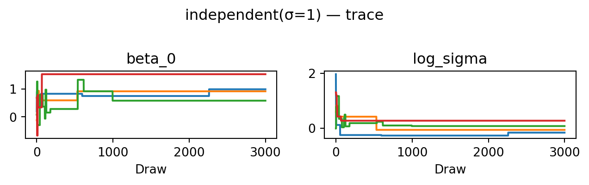
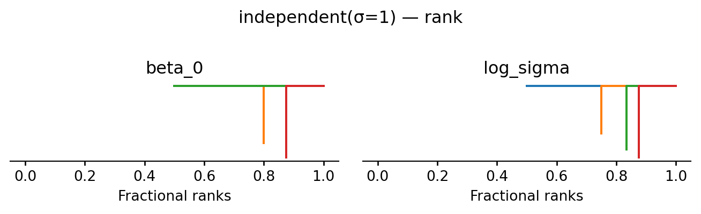
| mean | sd | eti89_lb | eti89_ub | ess_bulk | ess_tail | r_hat | mcse_mean | mcse_sd | |
|---|---|---|---|---|---|---|---|---|---|
| beta_0 | 1 | 0.3 | 0.58 | 1.5 | 4 | 4 | 15.80 | 0.17 | 0.085 |
| beta_1 | -0.4 | 0.21 | -0.66 | -0.095 | 4 | 4 | 15.01 | 0.1 | 0.044 |
| beta_2 | 1.8 | 0.2 | 1.4 | 2.1 | 4 | 4 | 3.29 | 0.097 | 0.052 |
| beta_3 | 0.2 | 0.3 | -0.17 | 0.52 | 4 | 4 | 15.80 | 0.12 | 0.065 |
| log_sigma | 0 | 0.17 | -0.27 | 0.27 | 4 | 4 | 6.38 | 0.086 | 0.04 |
The posterior occupies a tiny corner of the proposal’s support, so almost every move is rejected. The acceptance rate is near zero, the trace shows chains stuck at their starting points, and \(\hat R \gg 1\). This is a textbook example of a chain that has not converged.
6.5.6 Random-walk proposal
The independent proposal ignores the current state entirely, so it cannot exploit progress that the chain has already made. A random walk proposal fixes this by adding Gaussian noise to the current state: once the chain finds a high-probability region it will tend to stay nearby. The proposal is symmetric, so \(\log q\)-ratio \(= 0\). Since the Gaussian allows proposing any value, the chain remains aperiodic and Harris recurrent.
def propose_random_walk(scale):
"""q(theta' | theta) = N(theta, scale^2 I): symmetric, so log_q_ratio = 0."""
def propose(key, theta, log_p):
theta_new = theta + scale * random.normal(key, theta.shape)
return theta_new, 0.0
return proposeevaluate("random-walk(σ=0.1)", propose_random_walk(0.1), random.PRNGKey(2))random-walk(σ=0.1): acceptance rate 0.178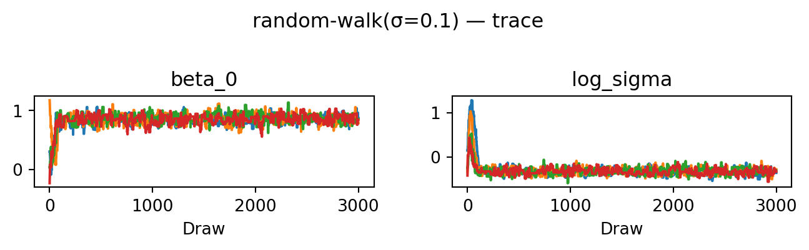
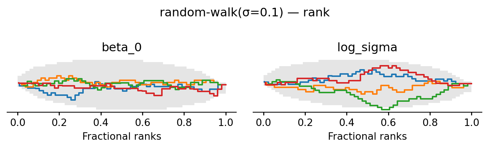
| mean | sd | eti89_lb | eti89_ub | ess_bulk | ess_tail | r_hat | mcse_mean | mcse_sd | |
|---|---|---|---|---|---|---|---|---|---|
| beta_0 | 0.864 | 0.072 | 0.75 | 0.97 | 248 | 254 | 1.01 | 0.0045 | 0.0034 |
| beta_1 | -0.446 | 0.066 | -0.56 | -0.35 | 186 | 168 | 1.02 | 0.0049 | 0.0032 |
| beta_2 | 1.916 | 0.065 | 1.8 | 2 | 266 | 253 | 1.02 | 0.0041 | 0.0032 |
| beta_3 | 0.306 | 0.072 | 0.19 | 0.42 | 213 | 285 | 1.02 | 0.0049 | 0.0036 |
| log_sigma | -0.33 | 0.073 | -0.44 | -0.21 | 188 | 282 | 1.02 | 0.0054 | 0.0037 |
The chains now converge: after a short burn-in they fluctuate around the same level, the rank plot is much closer to uniform, and ESS and \(\hat R\) are good. For this simple model, a random walk with a well-chosen step size is sufficient to explore the posterior. For more complex models, however, the random walk can struggle to find and traverse narrow high-probability regions, which is why we will now look at gradient-based proposals.
6.5.7 MALA proposal
The random walk takes uninformed steps. The Metropolis-adjusted Langevin algorithm (MALA) uses the gradient of the log target to nudge proposals toward higher-probability regions: \[
\theta' = \theta + \frac{\text{scale}^2}{2} \nabla \log p(\theta) + \text{scale} \cdot \varepsilon, \qquad \varepsilon \sim \mathcal{N}(0, I).
\] This allows larger steps while keeping the acceptance rate high. The proposal is asymmetric: the drift is different at \(\theta\) and at \(\theta'\). Hence, we must compute a non-trivial \(\log q\)-ratio. JAX gives us \(\nabla \log p\) for free via jax.grad. Each step now requires one gradient evaluation in addition to the usual log-density evaluation. To avoid exploding gradients, we clip the gradient to a maximum L2 norm before computing the drift.
def propose_mala(scale, max_grad_norm=10.0):
"""Langevin proposal: theta' = theta + (scale^2 / 2) clip(∇log p(theta)) + scale ε.
Gradients are clipped to L2 norm <= max_grad_norm before computing the drift.
"""
def clip_grad(g):
norm = jnp.linalg.norm(g)
return jnp.where(norm > max_grad_norm, g * (max_grad_norm / norm), g)
def propose(key, theta, log_p):
val_and_grad = jax.value_and_grad(log_p)
_, g_fwd = val_and_grad(theta)
mean_fwd = theta + 0.5 * scale**2 * clip_grad(g_fwd)
theta_new = mean_fwd + scale * random.normal(key, theta.shape)
# value_and_grad at theta_new gives both the log density (reused by mh_step
# via the proposal cache) and the reverse-drift gradient in one pass.
_, g_rev = val_and_grad(theta_new)
mean_rev = theta_new + 0.5 * scale**2 * clip_grad(g_rev)
log_q_fwd = jnp.sum(stats.norm.logpdf(theta_new, mean_fwd, scale))
log_q_rev = jnp.sum(stats.norm.logpdf(theta, mean_rev, scale))
log_q_ratio = log_q_rev - log_q_fwd
return theta_new, log_q_ratio
return proposeevaluate("MALA(σ=0.05)", propose_mala(0.05), random.PRNGKey(5))MALA(σ=0.05): acceptance rate 0.601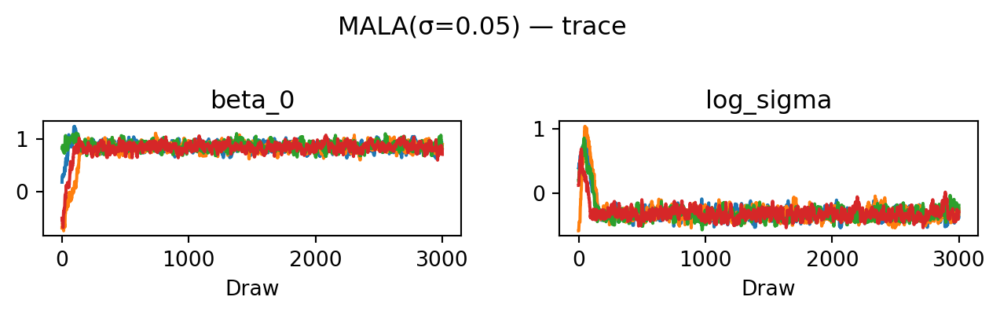
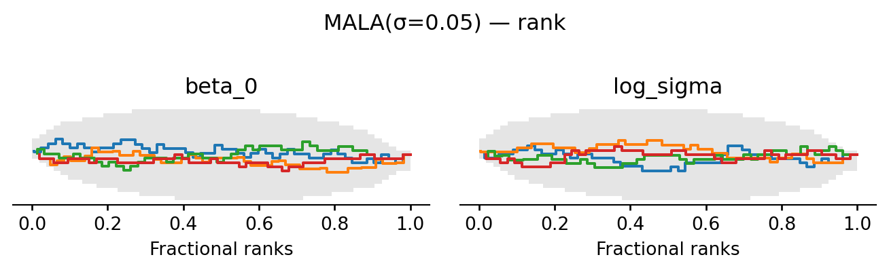
| mean | sd | eti89_lb | eti89_ub | ess_bulk | ess_tail | r_hat | mcse_mean | mcse_sd | |
|---|---|---|---|---|---|---|---|---|---|
| beta_0 | 0.85 | 0.077 | 0.72 | 0.97 | 231 | 392 | 1.01 | 0.005 | 0.0035 |
| beta_1 | -0.438 | 0.066 | -0.54 | -0.33 | 356 | 487 | 1.01 | 0.0035 | 0.0024 |
| beta_2 | 1.918 | 0.069 | 1.8 | 2 | 281 | 373 | 1.01 | 0.0042 | 0.0031 |
| beta_3 | 0.301 | 0.076 | 0.18 | 0.42 | 235 | 385 | 1.01 | 0.0049 | 0.0036 |
| log_sigma | -0.32 | 0.08 | -0.44 | -0.18 | 208 | 245 | 1.01 | 0.0057 | 0.0044 |
6.5.8 HMC proposal
While MALA moves in the direction of high probability, it is unable to move well between different high-probability regions. Hamiltonian Monte Carlo (HMC) generates long, gradient-guided proposals by simulating the physics of a frictionless skater rolling on the landscape of the negative log target (see Betancourt (2018)). The key trick is to augment the state with an auxiliary momentum \(\rho \in \mathbb{R}^d\), giving a joint distribution \[ p(\theta, \rho) \;\propto\; \exp\bigl(-H(\theta, \rho)\bigr), \qquad H(\theta, \rho) \;=\; \underbrace{-\log p(\theta)}_{\text{potential } V(\theta)} \;+\; \underbrace{\tfrac{1}{2}\|\rho\|^2}_{\text{kinetic } T(\rho)}. \] Because \(\rho\) is independent of \(\theta\) in the joint, the \(\theta\)-marginal is unchanged. If at each step we draw a fresh \(\rho \sim \mathcal{N}(0, I)\) and then move along a curve of constant \(H\) (i.e. exactly conserving energy), the resulting move leaves the joint invariant and we can simply discard \(\rho\) at the end.
Such an energy-preserving curve is the solution of Hamilton’s equations \(\dot\theta = \partial H/\partial \rho = \rho\) and \(\dot\rho = -\partial H/\partial \theta = \nabla \log p(\theta)\). We approximate them with the leapfrog integrator, which alternates a half-kick of momentum, a full drift of position, and another half-kick: \[ \rho_{t+1/2} = \rho_t + \tfrac{\varepsilon}{2}\nabla\log p(\theta_t), \qquad \theta_{t+1} = \theta_t + \varepsilon\, \rho_{t+1/2}, \qquad \rho_{t+1} = \rho_{t+1/2} + \tfrac{\varepsilon}{2}\nabla\log p(\theta_{t+1}). \] Leapfrog is symplectic and time-reversible, properties that would make \(H\) exactly conserved and every proposal accepted in the continuous limit. The finite step size \(\varepsilon\) introduces a small discretisation error that causes \(H\) to drift, and the MH acceptance ratio corrects for it: \[ \log\alpha \;=\; H(\theta, \rho) - H(\theta', \rho') \;=\; \underbrace{\log p(\theta') - \log p(\theta)}_{\texttt{log\_p\_prop} - \texttt{log\_p\_theta}} \;+\; \underbrace{\tfrac{1}{2}\bigl(\|\rho\|^2 - \|\rho'\|^2\bigr)}_{\texttt{log\_q\_ratio}}. \]
The price of these long trajectories is that leapfrog is only stable when the step size \(\varepsilon\) is small compared to the local curvature of \(V\). Above that bound the simulated \(H\) explodes (called “divergent transitions”), every proposal is rejected, and the chain freezes. Tuning HMC therefore requires picking \(\varepsilon\) small enough for stability and \(L\) large enough to traverse the typical set without retracing steps; the NUTS sampler in tools like Stan and NumPyro automates both.
def propose_hmc(step_size, n_leapfrog):
"""HMC: L leapfrog steps at step size ε.
log_q_ratio = 0.5*(||p0||² - ||p'||²) corrects for discretisation error."""
def propose(key, theta, log_p):
grad_log_p = jax.grad(log_p)
p0 = random.normal(key, theta.shape) # fresh momentum, ~ N(0, I)
theta_t, p_t = theta, p0
for _ in range(n_leapfrog):
p_half = p_t + 0.5 * step_size * grad_log_p(theta_t)
theta_t = theta_t + step_size * p_half
p_t = p_half + 0.5 * step_size * grad_log_p(theta_t)
log_q_ratio = 0.5 * (jnp.sum(p0**2) - jnp.sum(p_t**2))
return theta_t, log_q_ratio
return proposeevaluate("HMC(ε=0.035, L=10)", propose_hmc(0.035, 10), random.PRNGKey(4))HMC(ε=0.035, L=10): acceptance rate 0.952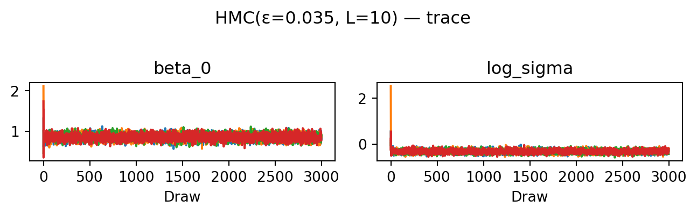
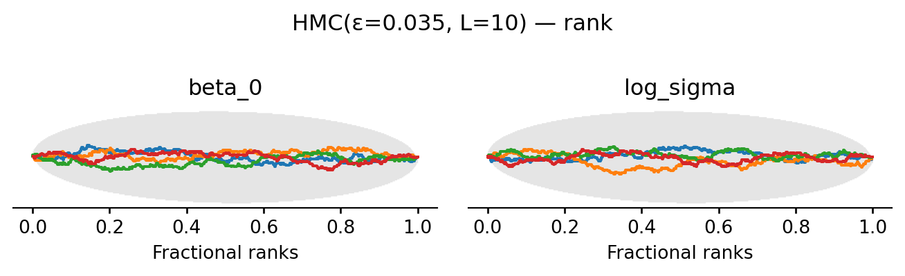
| mean | sd | eti89_lb | eti89_ub | ess_bulk | ess_tail | r_hat | mcse_mean | mcse_sd | |
|---|---|---|---|---|---|---|---|---|---|
| beta_0 | 0.851 | 0.074 | 0.73 | 0.97 | 2310 | 2773 | 1.00 | 0.0015 | 0.0011 |
| beta_1 | -0.436 | 0.069 | -0.55 | -0.32 | 1085 | 1513 | 1.00 | 0.0021 | 0.0015 |
| beta_2 | 1.917 | 0.067 | 1.8 | 2 | 1244 | 1821 | 1.00 | 0.0019 | 0.0014 |
| beta_3 | 0.3 | 0.074 | 0.18 | 0.42 | 2500 | 2665 | 1.00 | 0.0015 | 0.0011 |
| log_sigma | -0.323 | 0.072 | -0.44 | -0.21 | 2354 | 3057 | 1.00 | 0.0015 | 0.001 |
HMC achieves the highest ESS of all four proposals: the trace plots look essentially uncorrelated and the rank plots are visibly closer to uniform. The cost is \(L = 10\) gradient evaluations per proposed move rather than one.
6.5.9 Summary
The progression illustrates a single principle: the more the proposal exploits the geometry of the target, the higher the ESS per chain. This comes at the cost of more gradient work per step. The independent proposal ignores the state entirely and fails. The random walk uses only the current position. MALA adds the gradient. HMC adds the gradient at \(L\) intermediate points along a Hamiltonian trajectory. Each of these proposals also has free parameters whose tuning matters: the rule-of-thumb acceptance targets are roughly \(25\%\) for random-walk, \(57\%\) for MALA, and \(65-80\%\) for HMC. In practice these are adjusted during a warm-up phase, which is exactly what NumPyro’s NUTS sampler does automatically.
6.6 Diagnosing convergence
The diagnostics in this section follow the treatment in Chapter 11 of Gelman et al. (2013). The basic problem of MCMC inference is that we never observe the stationary distribution directly. Instead we only see a finite collection of correlated draws from a few chains. Two failure modes can spoil our inferences. First, the chains may not have mixed: different chains can settle in different regions of parameter space and look stationary on their own while disagreeing with each other. Second, even if the chains agree, each individual chain may not have reached stationarity: an early-iteration drift can persist into the post-warmup samples. Both must be ruled out before we trust averages over the draws.
To detect both problems with a single number, we follow Gelman et al. and split each chain in half after discarding the warm-up. If we run \(M\) chains of post-warmup length \(2n\), splitting gives us \(m = 2M\) half-chains of length \(n\). Mixing failures show up as disagreement between chains; stationarity failures show up as disagreement between the first and second half of the same chain. Hence both look like between-chain disagreement once the splits are pooled. The diagnostics below all operate on these \(m\) split-chains.
Fix a scalar quantity of interest \(\psi\) (a parameter, a derived quantity, or \(\log p(\theta \mid y)\)). Write \(\psi_{ij}\) for draw \(i\) of split-chain \(j\), with chain mean \(\bar\psi_{\cdot j}\) and grand mean \(\bar\psi_{\cdot\cdot}\). The between-chain and within-chain variances are \[ B \;=\; \frac{n}{m-1}\sum_{j=1}^{m}\bigl(\bar\psi_{\cdot j} - \bar\psi_{\cdot\cdot}\bigr)^{2}, \qquad W \;=\; \frac{1}{m}\sum_{j=1}^{m} s_{j}^{2}, \qquad s_{j}^{2} = \frac{1}{n-1}\sum_{i=1}^{n}\bigl(\psi_{ij} - \bar\psi_{\cdot j}\bigr)^{2}. \] The factor \(n\) in \(B\) rescales the variance of the chain means into a variance on the same footing as \(W\). Intuitively, \(W\) measures how much each chain wiggles around its own mean, and \(B\) measures how much the chain means disagree with each other.
If the chains had truly converged we would have \(B \approx W\): each chain would explore the full posterior, so its sample variance would equal the marginal posterior variance, and the chain means would all sit near the true posterior mean. As long as the starting distribution is overdispersed relative to the target, \(W\) underestimates the posterior variance (chains have not had time to explore the tails) while a weighted combination \[ \widehat{\mathrm{var}}^{+}(\psi \mid y) \;=\; \frac{n-1}{n}\, W \;+\; \frac{1}{n}\, B \] overestimates it. The potential scale reduction factor \(\hat R\) compares these two estimates: \[ \hat R \;=\; \sqrt{\frac{\widehat{\mathrm{var}}^{+}(\psi \mid y)}{W}}. \] \(\hat R\) measures by what factor the posterior scale could shrink if we ran the chains forever. As \(n \to \infty\) both estimates converge to the true variance and \(\hat R \to 1\). A common practical threshold is \(\hat R < 1.01\); values noticeably above \(1\) signal that some chains are still exploring distinct regions or that individual chains have not yet stabilised.
Convergence is necessary but not sufficient: even well-mixed chains produce correlated draws, so \(mn\) samples are worth fewer than \(mn\) independent draws. The effective sample size quantifies this loss. The asymptotic variance of the chain average \(\bar\psi_{\cdot\cdot}\) as an estimator of \(\mathbb{E}[\psi \mid y]\) is \[ \lim_{n\to\infty}\, mn \cdot \mathrm{var}(\bar\psi_{\cdot\cdot}) \;=\; \Bigl(1 + 2\sum_{t=1}^{\infty}\rho_{t}\Bigr)\,\mathrm{var}(\psi \mid y), \] where \(\rho_t\) is the lag-\(t\) autocorrelation of \(\psi\) along a chain. If the draws were independent, this variance would just be \(\mathrm{var}(\psi \mid y)\), so the inflation factor in parentheses is the price of correlation. Defining \[ n_{\mathrm{eff}} \;=\; \frac{mn}{1 + 2\sum_{t=1}^{\infty}\rho_{t}} \] gives the number of independent draws that would carry the same information as the \(mn\) correlated ones. A chain that proposes tiny steps has \(\rho_t\) close to \(1\) for many lags and a small \(n_{\mathrm{eff}}\); a well-tuned HMC sampler has rapidly decaying \(\rho_t\) and \(n_{\mathrm{eff}}\) approaching \(mn\).
The estimator computes empirical autocorrelations according to \[ \hat\rho_t := 1 - \frac{V_t}{2 \widehat{\mathrm{var}}^{+}(\psi \mid y)}, \qquad V_t := \frac{1}{m(n-t)}\sum_{j=1}^m \sum_{i=t+1}^n (\psi_{ij}-\psi_{i-t,j})^2. \] This formula is motivated by solving the identity \(\mathbb{E}(\psi_i - \psi_{i-t})^2 = 2 \mathrm{var}(\psi \mid y) (1 - \rho_t)\) for \(\rho_t\) and plugging in the variance estimator. Since these estimates get noisy as \(t\) increases, the sum is then truncated at the first lag \(T\) where consecutive pairs \(\hat\rho_{2t} + \hat\rho_{2t+1}\) turn negative. Gelman et al. (2013) recommends running until \(\hat n_{\mathrm{eff}} \gtrsim 5m\) ( ten effective draws per split-chain) in addition to \(\hat R\) being near \(1\).
A few caveats. Both \(\hat R\) and \(\hat n_{\mathrm{eff}}\) are computed per scalar quantity: a chain may converge cleanly for one parameter and badly for another, so all quantities of interest must be checked. Both diagnostics rely on means and variances and so behave best for approximately Gaussian marginals; for heavy-tailed or constrained quantities one transforms first (logs, logits, or ranks). Morever, neither diagnostic can detect modes that the chains never visited. Convergence checks only confirm that the chains agree with each other, not that they have found everything.
6.7 Bibliographic notes
The standard reference for general Markov chains is the classic text by Meyn and Tweedie (Meyn, Tweedie, and Glynn (2009)) which covers the relevant limit theorems in detail. Comprehensive coverage of Monte Carlo methods including MCMC is given by the monograph by Robert and Casella (Robert and Casella (2004)). I find the presentation in Tierney (1994) much easier to follow. Hamiltonian Monte Carlo is reviewed in detail by Betancourt (2018).